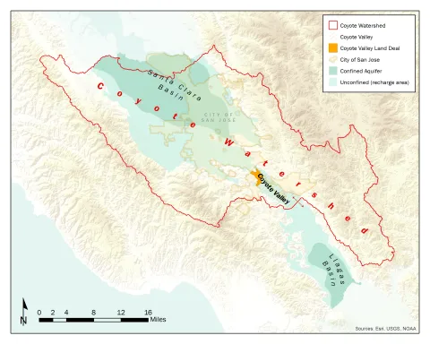
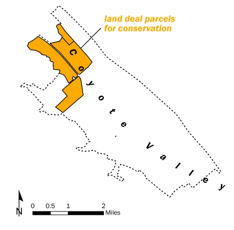
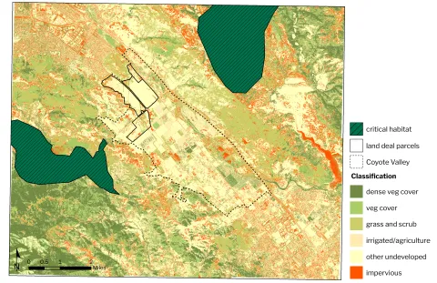
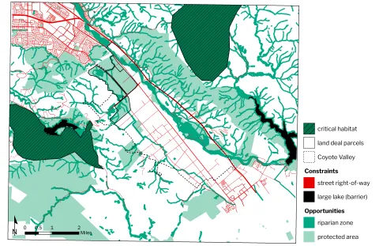
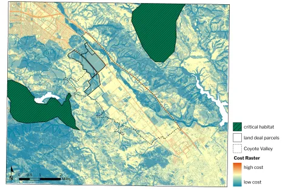
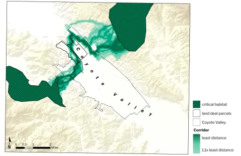
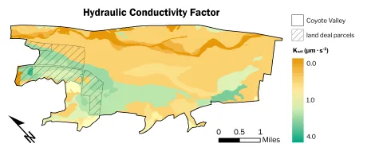
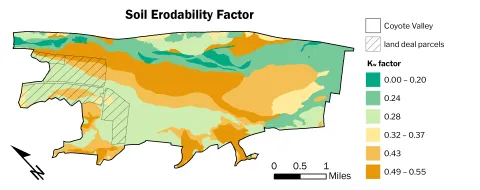
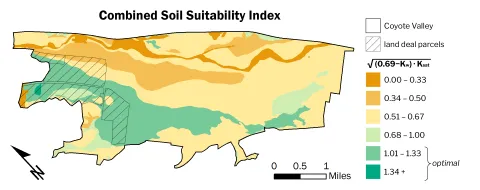
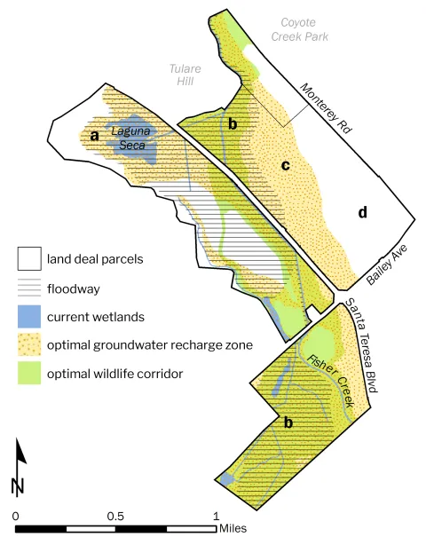

Coyote Valley Ecological Analysis
This geospatial analysis, inspired by the 2019 North Coyote Valley Conservation Area land deal, is excerpted and modified from an applied project in UC Berkeley Landscape Architecture & Environmental Planning.
Coyote Valley is located in the Santa Clara Valley near the southern border of the City of San José. The valley drains the upper Coyote Creek watershed and serves as a recharge area for the Santa Clara Valley groundwater basin.


Historically, Coyote Valley was dominated by valley oak savanna (roblar) and sycamore grove (alisal) ecosystems. The northern valley was home to a seasonal lake (Laguna Seca) and large wet meadow ecosystem fed by Fisher Creek in the southeast, while sycamore alluvial woodland and riparian scrub lined the main channel of Coyote Creek.
Today, land use in Coyote Valley is largely agricultural, with some remaining open space and limited commercial development. Laguna Seca remains as a seasonal freshwater wetland, providing flood protection for downstream San José.
Coyote Valley is ecologically significant as the narrowest linkage between the Santa Cruz Mountains to the southwest and the Diablo Range to the northeast. The valley and surrounding foothills are home to threatened and endangered species including the California tiger salamander, California red-legged frog, and bay checkerspot butterfly.
Due to its proximity to the City of San José and greater Silicon Valley area, Coyote Valley has long been targeted for office park and warehouse development. However, a critical northern section, including the Laguna Seca wetland and former Fisher Creek riparian zone, was saved from development through California AB 948 in 2020. Before the land agreement, 35,000 industrial and manufacturing jobs were expected to come to Coyote Valley, but with the protection of this land for conservation, development plans for these industrial jobs are now slated for Downtown San Jose and Alviso.


The City of San José, in cooperation with the Santa Clara Valley Open Space Authority, is now assessing the newly-protected land deal for ecological restoration and green infrastructure planning. Aside from restoration as an ecological linkage and critical wildlife habitat, the site’s placement in the watershed and groundwater basin holds potential for groundwater recharge and flood protection benefits.
Watershed model
Highlighting water inflow into Coyote Valley as well as Coyote Creek floodways and discharge to the Bay. Topography is indicated via multi-scale Topographic Position Index:
Tiger salamander migration corridor
The US Fish & Wildlife Service identified critical habitat zones for the California tiger salamander (Ambystoma californiense) on either side of Coyote Valley. This analysis uses land use information to determine an optimal migration route through the valley, which can be used to target ecological restoration for the most effective linkage.
First, aerial imagery is classified via unsupervised ISODATA classification to distinguish vegetated cover (lowest-cost) and impervious surfaces (highest-cost).


This is combined with vector data for potential riparian corridors and protected areas (lowest-cost) and street rights-of-way (highest-cost)…


…to create an overall migration cost (friction) surface.


Finally, the sum of distances between the two critical habitat areas, weighted by the cost surface, is used to determine the optimal corridor.


Results identify an optimal migration pathway that passes directly though the study site along a north-south axis. This route follows riparian corridors and existing road crossings. These highlighted areas should be preserved and restored as a critical ecological linkage for the tiger salamander.
Groundwater recharge suitability
To indicate soil suitability for groundwater recharge, a simplified index is based on two of many factors: the hydraulic conductivity (Ksat, in micrometers per second, averaged across all soil layers), and the soil erodibility factor (Kw based on the whole soil structure, ranging from 0.20 to 0.69).




These two factors are combined using a modified geometric mean (after subtracting Kw from its theoretical maximum), and indicate a band of ideal soil suitability passing through the study site:


Putting the pieces together
- Restoring Laguna Seca to its historic seasonal wetland coverage (a), in addition to preserving a critical habitat for many species, is optimal for recharging groundwater aquifers and reducing flood risk for downstream San José.
- Restoration of Fisher Creek riparian corridor wetlands (b) should be prioritized as the primary migration route for the tiger salamander. Vegetated buffer zones along this floodway can also help to disperse and infiltrate flood waters.
- Parts of the northeast parcel (c) can be managed for agricultural groundwater recharge without conflicting with primary habitat needs, and protect the interior habitat from exotic species invasion.
- Higher-impact recreational uses should be limited to the eastern portion of the site (d) closest to Monterey Road.


This spatial analysis gives a first look at site suitability for potential ecosystem services: habitat linkage, groundwater recharge and flood control. More sophisticated analyses should assess habitat linkage for multiple species, and consider the effects of climate change on shifting habitat ranges and linkage continuity. Additionally, ground truthing is needed to account for finer nuances in site conditions. The San Francisco Estuary Institute and Santa Clara Valley Open Space Authority have conducted in-depth studies of wildlife corridors and historical ecology in the valley, which should inform planning and conservation activities at this site.
Data sources
- City of San José: plan area, parcels, streets, land use (2020)
- USGS NHD: water bodies, flow lines, watershed boundaries (2020)
- USGS NED: 1/3” (2020) and 1/9” (2006) DEMs
- USDA NAIP: 4-band satellite imagery (2018)
- USDA NRCS: soil units and soil survey data for Eastern Santa Clara
- US Fish & Wildlife Service: critical habitat areas (2010 data from 2005 study)
- CPAD (California Protected Areas Database): Protected Lands (2020)
- Santa Clara Valley Water District: aquifer locations (2018)